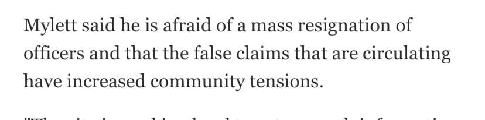

Mobile uploads
Your protests are working!
Apparently the chief of police here in Akron is concerned that he’s going to lose all of his police because you are protesting against their actions.
It’s simple, if he doesn’t want us to protest against the wrong officers than simply release the names of the correct officers. Problem solved.
Don’t stop!
You are doing incredible work. A mass resignation of police officers in Akron would be a powerful message. All police officers need to live in Akron. This is a great opportunity to start over with that requirement.